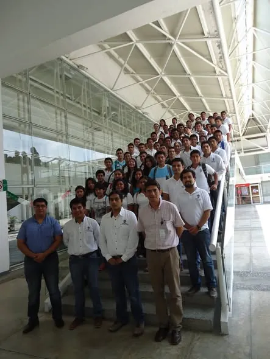
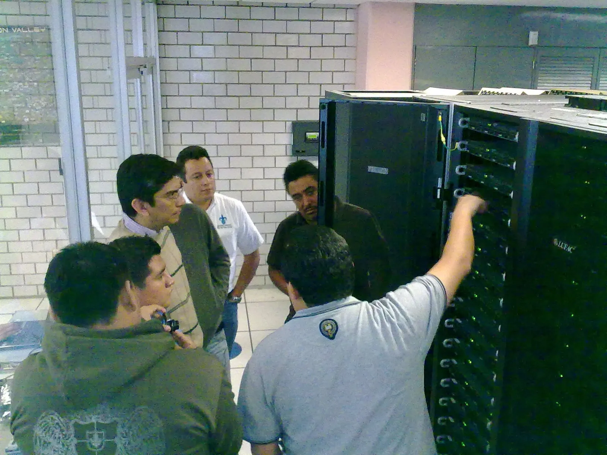
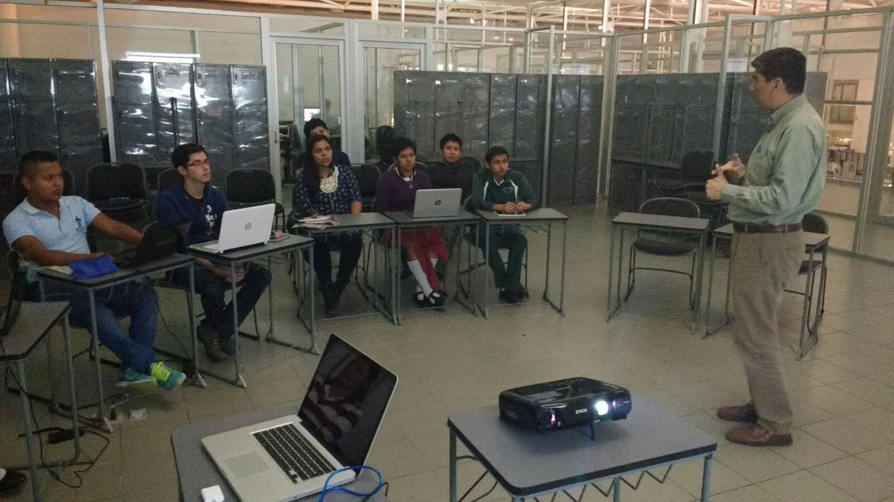
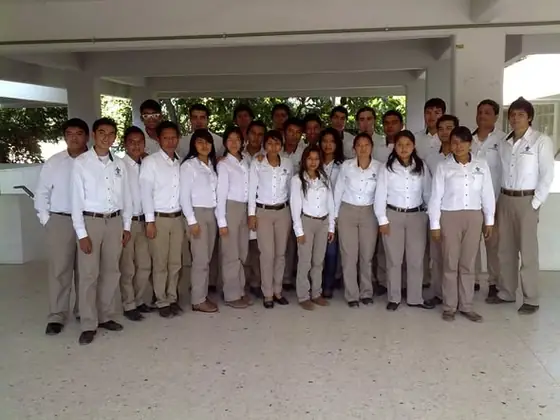
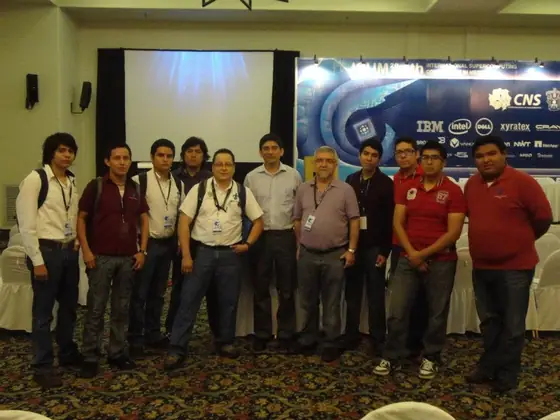
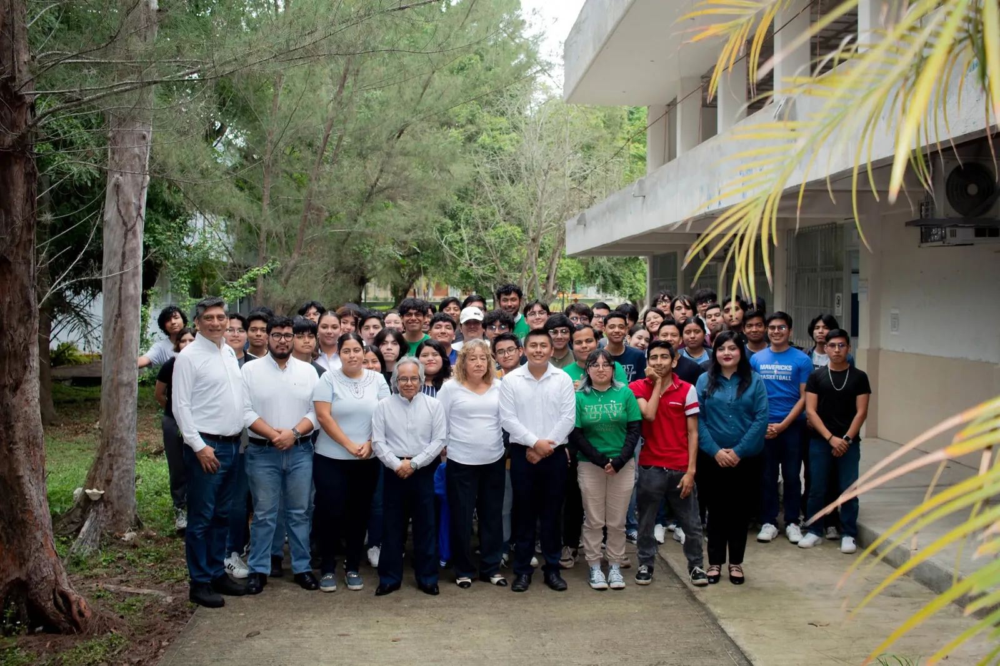

15 años formando a quienes construyen el futuro
El ITC celebra quince años de comunidad, tecnología y talento con dos días de torneos, dinámicas y convivencia.



Todo sobre los 15 años
La historia de la carrera, los eventos del 1 y 2 de diciembre, los carteles con los detalles y las fotos de estos años.


15 años en fotosGeneraciones, clases, eventos y recuerdos de la carrera. EventosLos torneos, las dinámicas y la agenda de los dos días. La carreraDatos, objetivo, campo laboral e historia. CartelesFecha, horario, lugar y precio de cada actividad. ColaboraSúmate a la organización o comparte tus fotos.Celebramos lo que hemos construido juntos
Quince años no se cumplen solos. Se cumplen con cada generación que pasó por nuestras aulas.
Este aniversario es un reconocimiento a la comunidad ITC: estudiantes, egresados, docentes y personal que hicieron posible cada logro.
Es el aniversario de la carrera que se imparte en la Facultad de Ingeniería en Electrónica y Comunicaciones de Poza Rica. También es una invitación a mirar hacia adelante. Por eso el programa lo decidió la propia comunidad: 203 votos de cuatro generaciones eligieron las diez actividades de la celebración.

El programa lo eligió la comunidad
Cuatro generaciones votaron por sus actividades favoritas. Así quedaron los resultados.
Ver los datos en tabla
Las generaciones que hicieron al ITC
Clases, laboratorios, ferias, cursos y fotos de grupo de estos quince años.